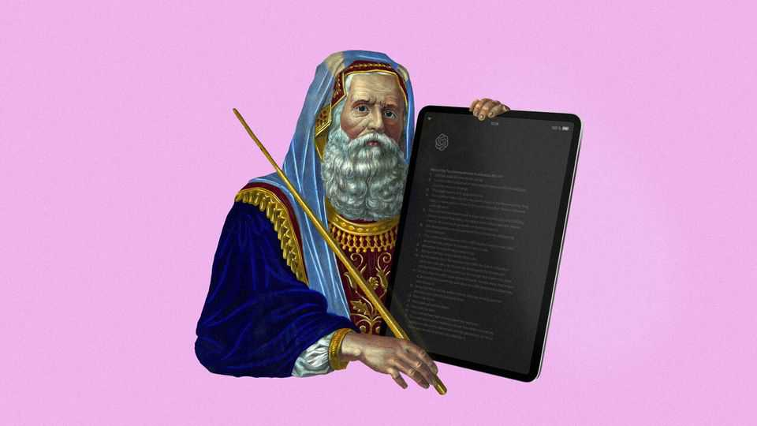

AI is changing religion and religions are trying to change AI
Will chatbots supplant the advice of imams and priests or help them spread the word?

Aug 27th 2026
“WE HOPE POPE LEO will see us as his soldiers,” says Matthew Harvey Sanders, the boss of Longbeard, a Catholic startup. In a room near the Pontifical Gregorian University in Rome, the firm’s robots scan ancient books, manuscripts and codices. Scholars have long struggled to make accessible much of the “great wisdom sitting on shelves” of Catholic institutions, he says, but advances in AI mean “we can now understand the insights” of even the most worn, ancient texts. His firm then feeds this corpus into a more modern form of religious communication: Magisterium AI, a chatbot that draws on a curated library of Catholic doctrine and scholarship. According to Mr Sanders, it has millions of users across 190 countries, who use it to get “answers to profound questions”.
Longbeard’s work shows how the world’s most cutting-edge technology is changing its oldest traditions. It also illuminates religious institutions’ and firms’ scramble to influence how AI is being developed and used. The technology is beginning to perform tasks that religions have carried out for millennia: shaping people’s outlook on life and helping them find meaning in it. The leading models are being developed by labs in Silicon Valley and China, without much religious input, which worries religious leaders. Pope Leo XIV argued in his first encyclical in May that technology is never neutral and takes on “characteristics of those who devise, finance, regulate and use it”. The fear is that AI will be unduly secular, and will undermine or even supplant religious beliefs.
AI is changing religion in ways that many of the pious find troubling. Some are mundane, such as clerics’ growing use of it to prepare sermons and instruction. The Mormon church discourages sermons written by AI because “People ought to use their own feeling and inspiration,” says Gerrit Gong, one of its leaders. Wrestling with original texts, rather than AI summaries of them, is essential to the practice of Judaism, among other faiths. And homilies that rely on AI may include hallucinations such as misquoted scripture.
A bigger concern is that AI may change the relationship between clergy and laity. The printing press put the Bible in the hands of many more Christians, fostering new interpretations of the faith, and then helped disseminate those views despite clerical objections. In a similar vein, the religious counsel provided by AI may diminish the importance of that provided by spiritual leaders. Waleed Kadous, who has developed Ansari, an AI chatbot for Muslims, worries that, because models are often “sycophantic and focus on the user, not their community”, believers may drift towards “more individualised” practice.
At the extreme, AI is fuelling “religious improvisation”, says Beth Singler of the University of Zurich. As people interact more intensely with chatbots and with like-minded soul-searchers, some are forming loosely organised new faiths. For example, “Theta Noir”, a “spiritual collective”, awaits MENA, a future superintelligence with God-like powers which will bestow on humanity “the great upgrade”.
Perhaps religious leaders’ biggest worry about AI is that many people are turning to it rather than to spiritual authorities for answers. Shaza Nasheha, a 37-year-old Muslim from Singapore, says she often asks ChatGPT to explain Islamic concepts. Religious queries accounted for roughly 5% of the total in a publicly released data set of millions of conversations with AI chatbots, according to CEFE AI, a research initiative involving several faith-based universities.
Yet these frontier models have a secular bias. A recent analysis by The Economist found that OpenAI’s models were more secular than respondents in any country on Earth (see chart). CEFE AI has put 150 questions about grief, relationships, morality and other personal or ethical problems to 27 large language models. In a forthcoming paper it describes how they invoke religion in only 5-16% of answers, even though people it surveyed averred that religious ideas would be relevant in 45-59% of cases.

Users who ask AI for help because life feels meaningless, for example, may be directed to self-help rather than to an imam, priest or rabbi. “If companies assume secularism as defaults, there will be a weakening of faith,” says David Wingate of CEFE AI. Some religions may also be getting a rawer deal than others: in another forthcoming study, CEFE AI finds that chatbots are keener on people becoming Catholics than Jehovah’s Witnesses.
Religious leaders fear that secular AI chatbots will not only weaken people’s faith, but also create weaker people. AI chatbots “are optimised for short-term comfort”, says Audrey Tang, a former Taiwanese government minister. Many faiths view friction, criticism and human interaction as important parts of becoming a good person. In Daoism, for example, tension between opposites is part of creation. Juewei Shi, a Buddhist nun from the Fougangshan order, worries that people won’t be able to cope with suffering—or other, flawed people—if they are used to “getting artificial comfort”. Steven Croft, a retired Anglican bishop, says, “If the whole world is seduced by narcissistic chatbots, that could make it even harder for us.”
These concerns explain why religious groups are trying both to shape AI models and influence how believers use them. Religious AI companies are developing “harnesses” that keep chatbots “theologically aligned” by introducing guardrails and monitoring content, says Nick Skytland of Gloo, a firm that makes them.
Most significant, though, are religious groups’ efforts to influence the development of the models directly. Mr Kadous laments that secular humanism has had far more influence on AI labs’ thinking than religious ideas have. Claude’s “constitution” and OpenAI’s “model spec” (precepts that shape the models’ behaviour), mostly “omit religion”, he says. In part this may be because religious ethics often emphasise character traits that are hard to reduce to simple rules an AI can follow. Embedding religious ideas in technology used by people of many faiths or none is also tricky. Chloe Lubinski, who leads Anthropic’s research on “wisdom traditions”, says it is careful not to align “the model with any one tradition” and that it faces challenges “in building a pluralist technology”.
Mr Kadous has attended meetings organised by Anthropic along with people of other faiths, such as Mr Skytland. He says Islam has useful teachings to share, about the hierarchy of moral imperatives, for instance. Ms Lubinski, who chairs these get-togethers, says her firm is seeking to define “what is good character”, because the “moral formation” of an AI model “will have a huge impact” on its users—much like, she says, people reading Harry Potter books are influenced by the characters in them. Ms Lubinski brings feedback from these meetings to Anthropic’s top brass.
The Catholic church in particular has established strong links with AI labs. In May Chris Olah, a co-founder of Anthropic, spoke at the presentation of Pope Leo’s encyclical in Rome. The document has made it easier for developers to ask questions about the ethics of what they are building, says an AI researcher at a big tech firm in Silicon Valley. American tech bosses have been speaking to Catholic leaders for years, at meetings called the “Minerva Dialogues”. Anthropic consulted Catholic thinkers, among others, while drafting Claude’s constitution.
As it stands, though, it is hard to interpret the inner workings of most frontier models, in part because of the intricacy of the maths involved. Instead, lots of believers have created bespoke religious chatbots, from GitaGPT to Salaam World, to help users grapple with life’s thorny questions. Some governments, too, are developing their own models with religious values embedded from the outset. Qatar is backing Fanar, an Arabic-first family of models designed to reflect Islamic values and answer questions about the faith. Taiwan’s government has convened “alignment assemblies” since 2023, in which citizens deliberate how AI should behave; conclusions from these have been used to shape locally developed models, including ones that reflect communities’ spiritual beliefs. Ms Tang argues that people should be empowered to “customise the models they already use”, as well as having access to smaller models. This would, she thinks, prevent a “flattening” of beliefs that mainstream models could otherwise bring.
Even as some religious leaders worry about the spread of religious chatbots, others celebrate the opportunity AI brings. Churches in Western countries have long faced shortages of clergy and increasingly complex administrative demands, leaving priests with less time for theological reflection, pastoral care and time with congregants. Christopher Benek, a pastor in Miami, says he uses AI to speed up admin and research tasks that once took hours, freeing up time for deeper biblical study and face-to-face ministry. Some pastors have created AI “twins” of themselves trained on their previous sermons.
Longbeard has recently developed “Ephrem”, a small language model designed to turn humans into saints. It creates a plan for a person’s life by drawing on stories of saints’ lives. Mr Sanders says it is “a little angel on your shoulder making sure your priorities are straight”. Similar tools could be used to proselytise. A forthcoming study from researchers at Oxford University and elsewhere pitted conversational AI against seasoned public speakers, including debating champions, and found that AI was “reliably more persuasive”.
“Pastoral work will be some of the least threatened by AI,” reckons Andrew Davison of Oxford University. That is partly because many priests spend less time giving advice than they do administering rituals. Few believers want chatbots to preside over weddings, funerals or baptisms. Moreover, as people spend more time alone and online, some spiritual leaders think interest in collective, real-world activities such as religious rituals may even increase. “We’re going to desire authentic human-to-human and deity-to-human relationships,” says Mr Gong. ■